Como resultado de um ano da aplicação de ações ESG, disponibilizamos para download o Relatório ESG elaborado pela equipe de especialistas. A soma dos esforços de diversos profissionais, estudantes e entusiastas da comunidade, resultou em ações concretas para a melhoria da qualidade ambiental, social e econimica para toda a comunidade.
Além do relatório ESG, elaborado pelo time da Geplan Ambiental, foi ainda elaborado, pelo time da DTA/Aquaplan, o livro de Recuperação das Praias de Matinhos. Um documento de leitura acessivel, pensado e desenvolvido para registrar a memoria do passado das praias de Matinhos, mostrar a melhora da qualidade de vida e na paisagem. O Livro conta ainda com diversos jogos educativos para os leitores mais participativos.


Confira os cursos livres promovidos pelas ações sociais


Solução em gerenciamento das ações ESG
 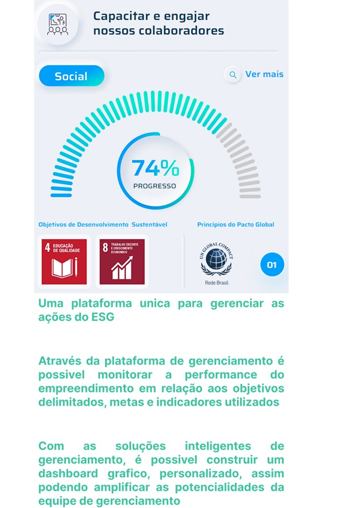
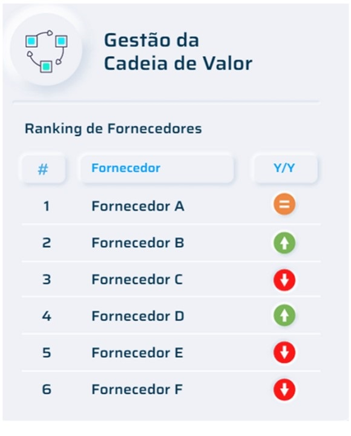
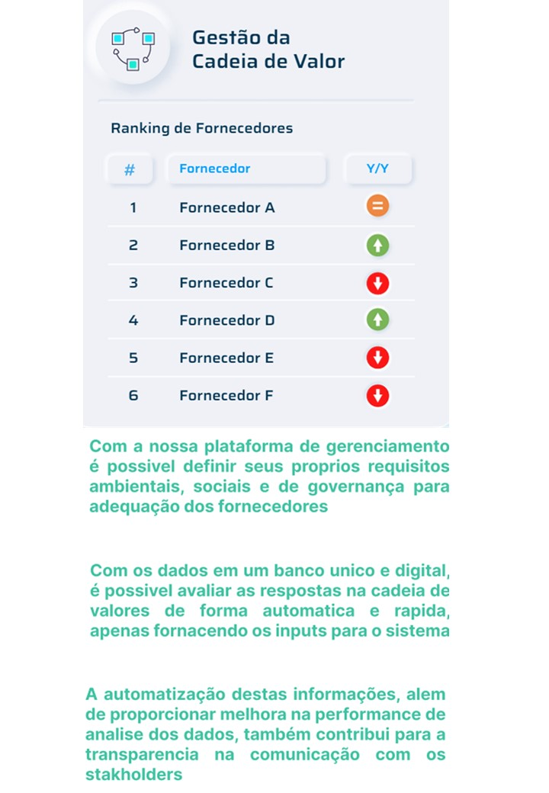
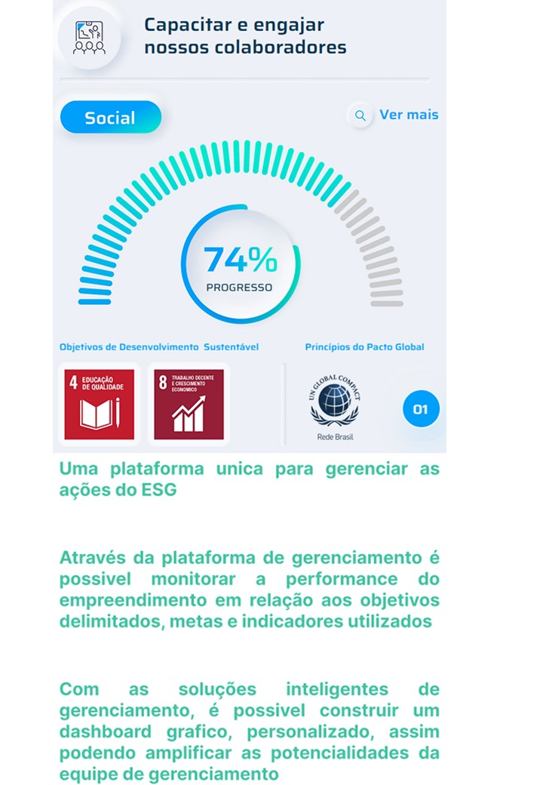
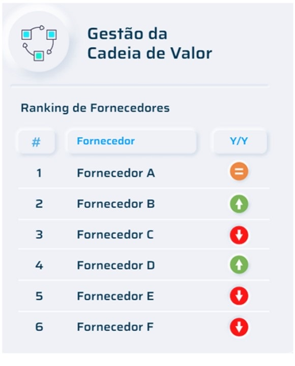
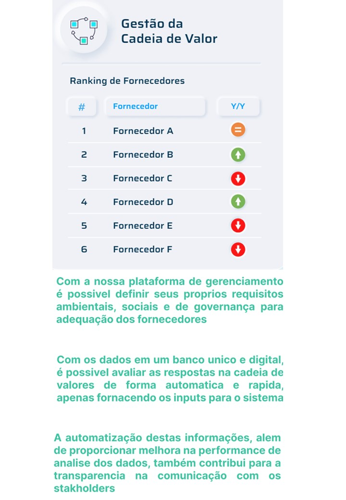
 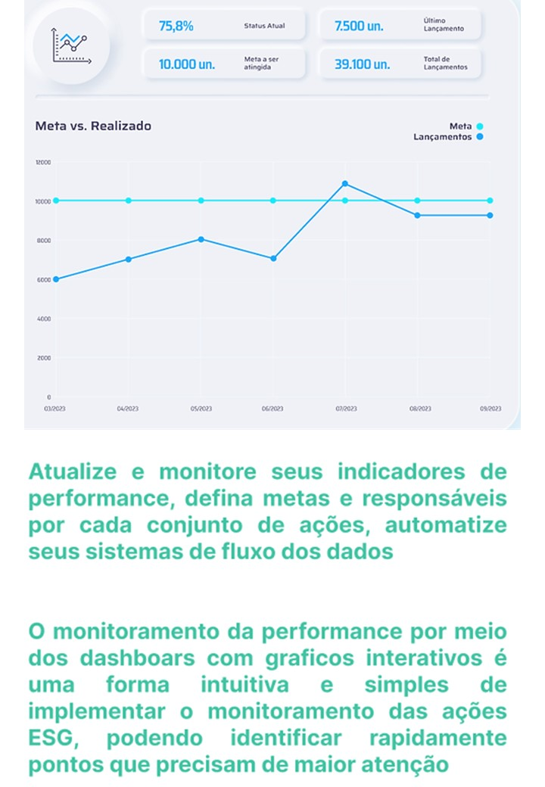
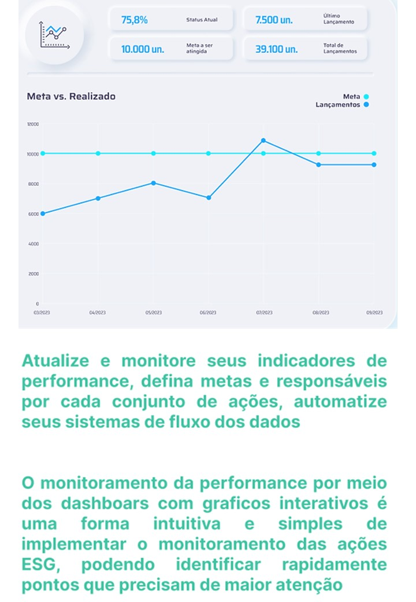
 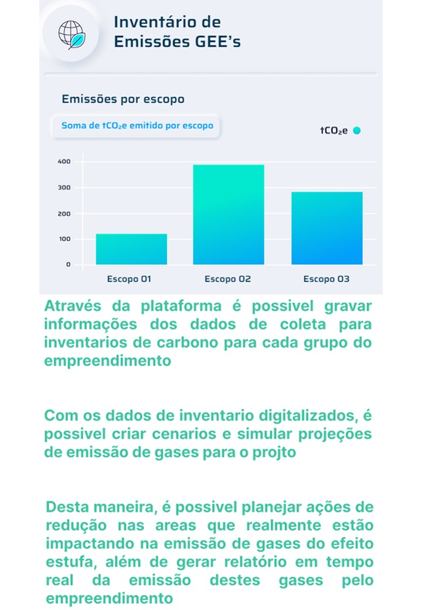
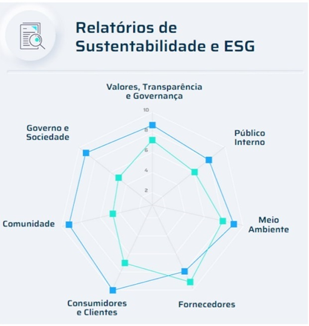
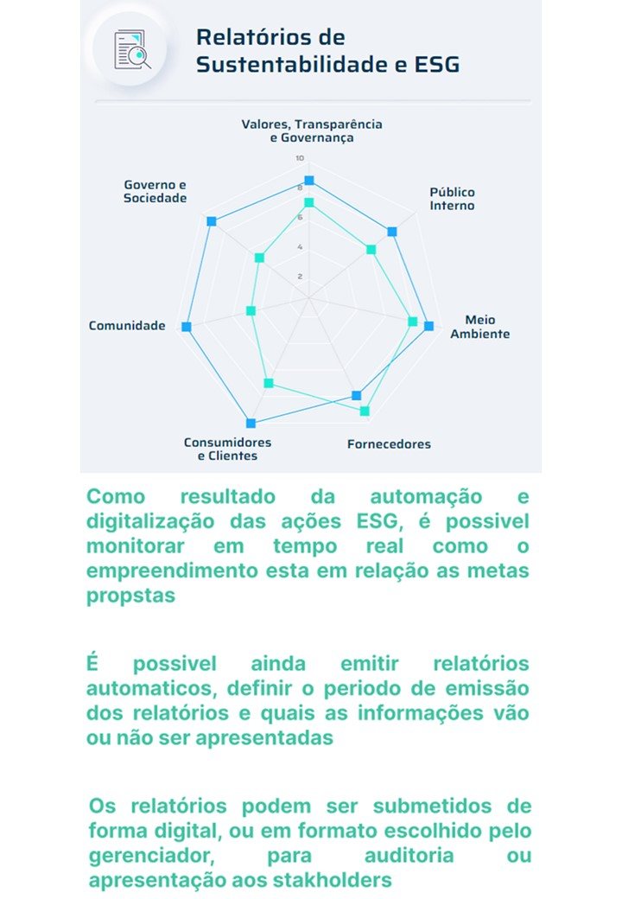
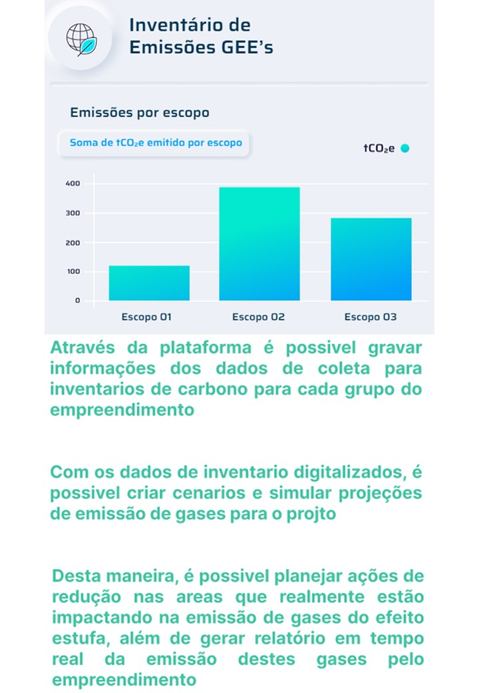
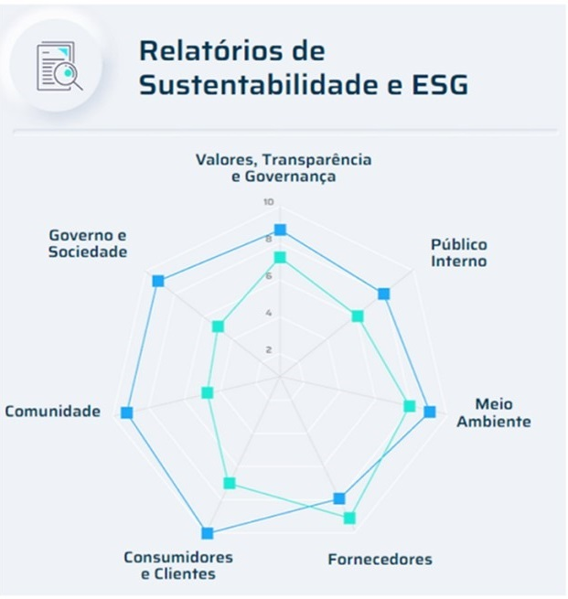
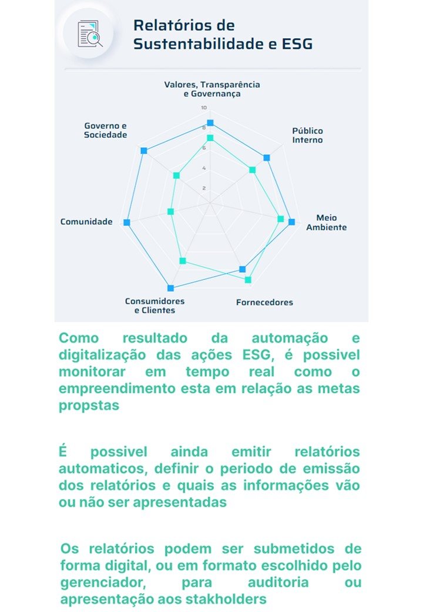